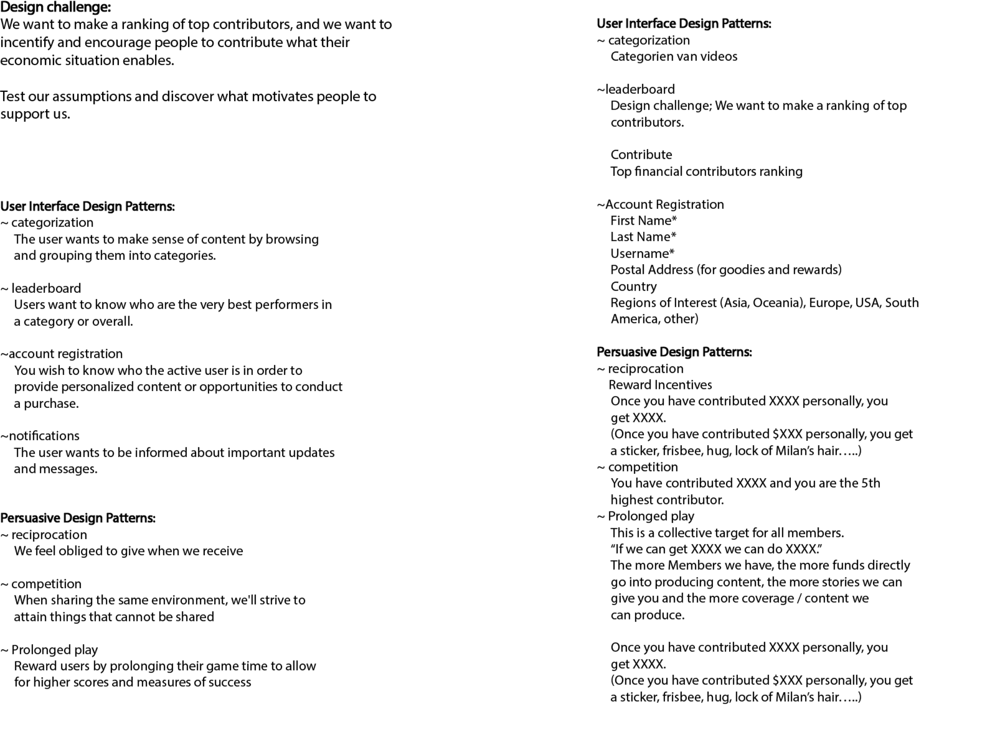
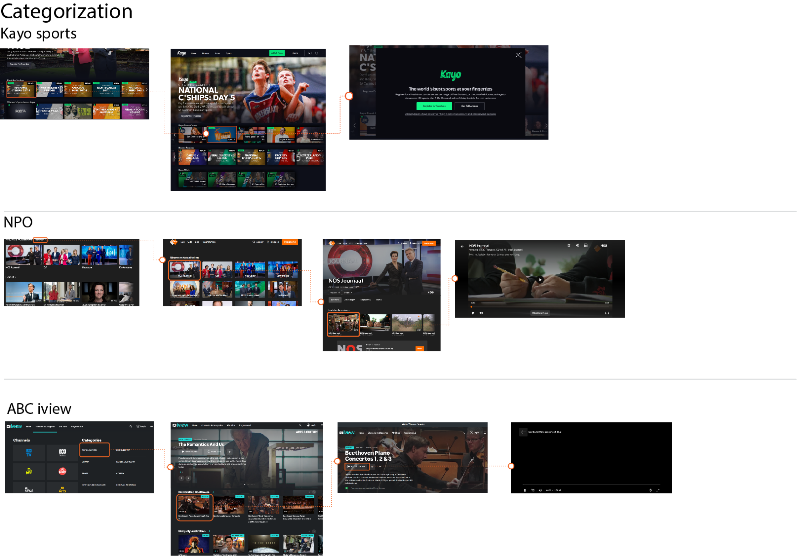
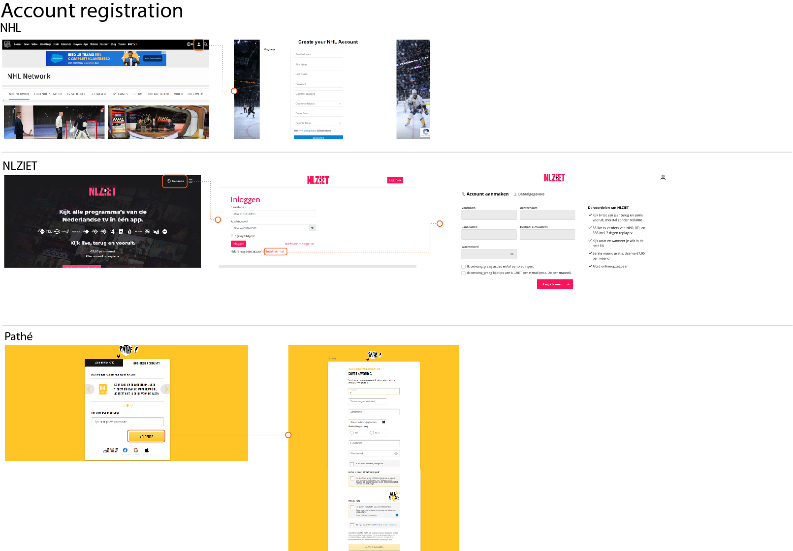
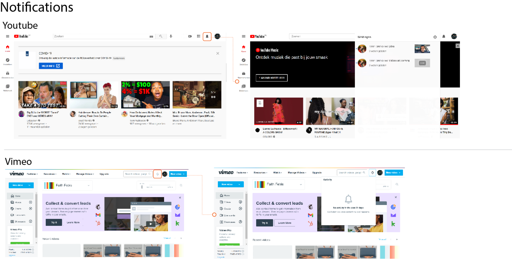
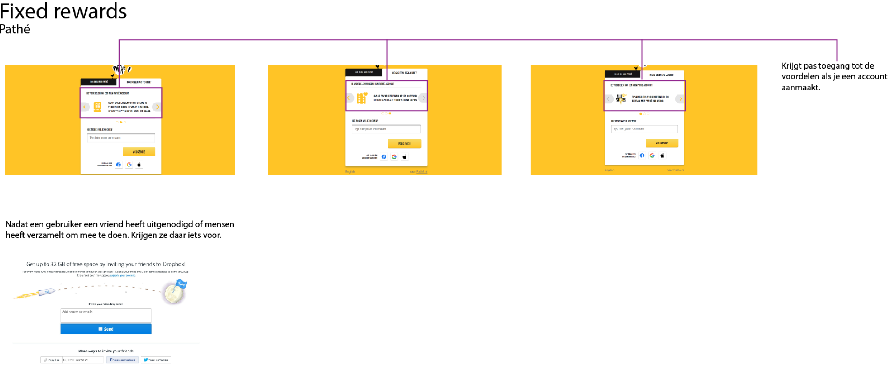
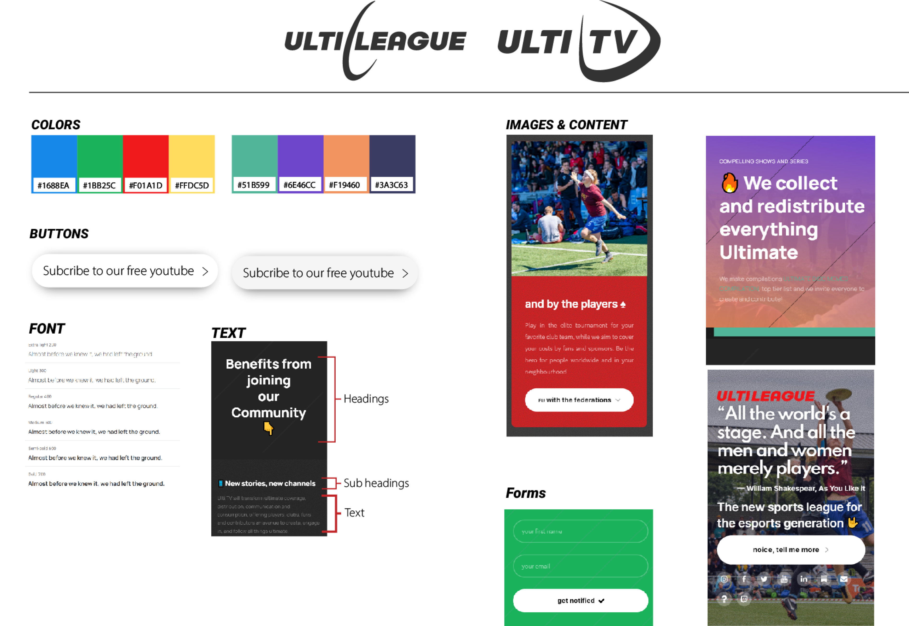
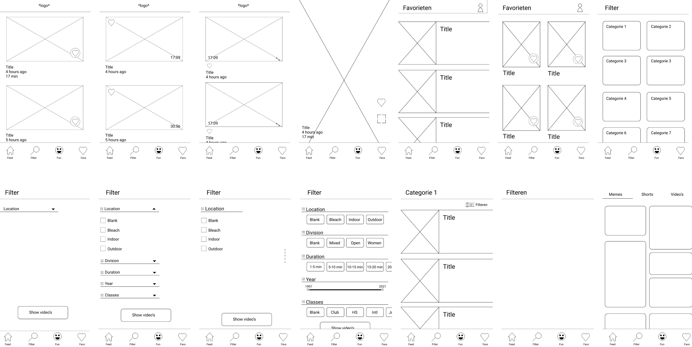
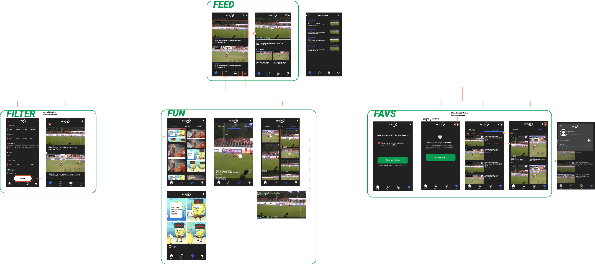
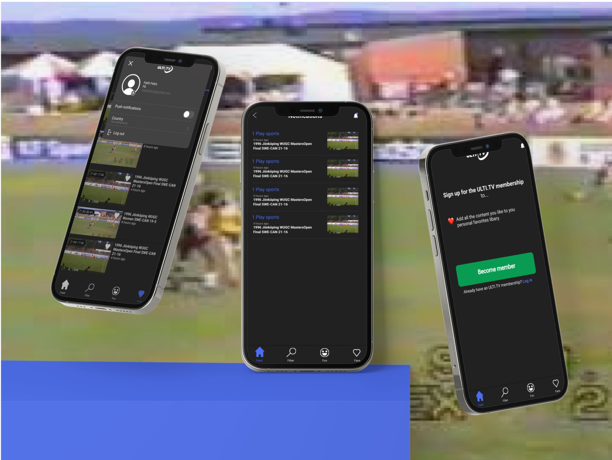

Video app
Vak: stage
Jaar: 2020
Tools: Figma, illustrator
Het probleem
Ultiverse maakt veel video’s en streaming content. De meeste van video’s en overige content is nu te vinden. Op hun sociale media platforms. De opdracht is om een app te ontwerpen waar al hun video en overige content te vinden is.
Video app
De video discovery app heeft een navigatie balk. Daar kan je navigeren tussen de verschillende pagina’s; feed, filter, fun en favs.
Based on Ultivids videos, make a [ULTI.TV](http://ulti.tv/) app that helps people to discover content.
Feed: feed of new videos coming out recently, based on the persons interest
Filter: filter any kinds of video length, category, subject, location, etc
Fun: shorts, memes and funny also not ultimate videos
Favs: your favorited videos ([UlTI.TV](http://ulti.tv/) membership needed)
Onderzoek
Design patterns
    Job stories
Feed:
When I want to be entertained. I want to see video’s similar to the video’s I have already watched. So I can stay up to date on the video’s I like.
Filter:
When I want to watch a video. I want to customize my search results with different filter options. So I can watch video’s that meet all my desires.
Fun:
When I want to be entertained in a timeframe of less than 5 minutes. I want to see/watch funny content. So I can feel good and recognize players, teams and laugh about them.
Favs:
When I like content I am watching. I want to add it to my favorites. So I can have a collection of all my favorite content, and watch them later. And expressing that I want to see more of these in my feed.
Ontwerp
Style tile
Wireframes
User flow
Het resultaat
 Bent u benieuwd naar het prototype?
Klik hier op de knop.